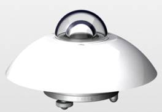
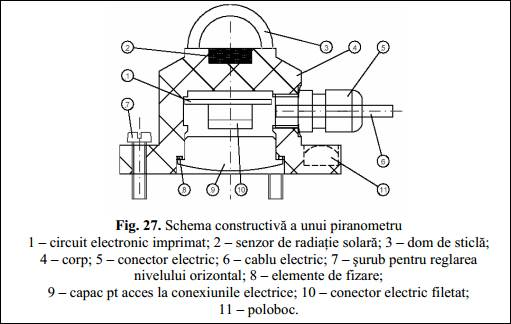
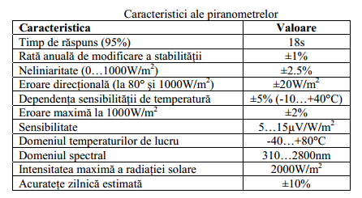
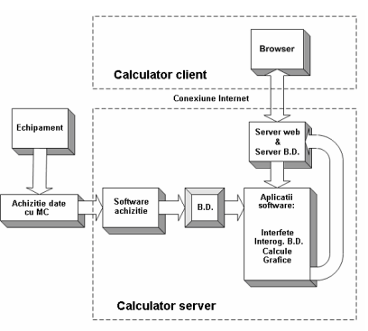
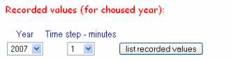
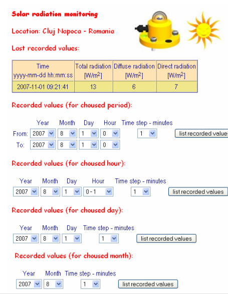

Un piranometru este un tip de actinometru folosit pentru măsurarea radianței solare pe o suprafață, fiind un senzor care este proiectat pentru a măsura densitatea liniilor de forță (în wați per metru pătrat) de la un câmp vizual de 180 grade.
Un piranometru tipic nu necesită vreo sursă de putere pentru a funcționa.
Piranometru în care se observă principalele componente ale instrumentului: cupola de sticlă, corpul de metal, dispozitivul pentru generarea semnalelor negru, ecranul de iradiere, nivelul şi cablul.


Schema sistemului original de achiziţie a datelor şi de monitorizarea intensităţii radiaţiei solare.

Schema de funcţionare a sistemului de achiziţie a datelor şi monitorizare.

Panoul virtual de monitorizare, realizat sub forma unei pagini web.